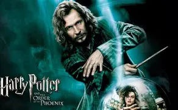

해리포터 시리즈의 세 번째 이야기
13세가 된 해리 포터는 또 한번의 여름 방학을 이모 가족인 더즐리 일가와 우울하게 보내야 했다. 물론 마법을 쓰는 건 일체 금지. 하지만, 버논 이모부의 누이인 마지 아줌마가 더즐리 가를 방문하면서 상황은 변한다. 위압적인 마지는 해리에겐 늘 공포의 대상. 마지 아줌마 때문에 스트레스를 받던 해리는 급기야 실수로 그녀를 거대한 괴물 풍선으로 만들어 하늘 높이 띄워 보내버리고 만다. 이모와 이모부에게 벌을 받을 것도 두렵고, 일반 세상에선 마법 사용이 금지돼 있는 것을 어겼기 때문에 호그와트 마법학교와 마법부의 징계가 걱정된 해리는 밤의 어둠 속으로 도망치지만, 순식간에 근사한 보라색 3층 버스에 태워져 한 술집으로 인도되고 마는데...
해리포터에서 해리포터를 연기했습니다.
해리포터에서 론 위즐리를 연기했습니다.
해리포터에서 헤르미온느를 연기했습니다.

해리포터에서 시리우스 블랙를 연기했습니다.